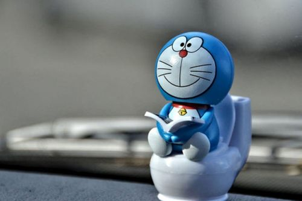

400-500-8888
时间：2016-04-21

随着共享时代的到来，万物“Uber化”已成为了一种潮流。所谓的“Uber化”一方面指的是去中心化，另一方面则是万物共享。民宿可以通过短租的方式“Uber化”，汽车可以通过专车的方式“Uber化”......如今，甚至连厕所这样这样一种相对私密的场所都可以“Uber化”。
前段时间，一位读者在与笔者的交流中提出了这样一个观点：厕所可以通过“Uber化”的方式玩O2O，他希望打造一个平台，实现全社会厕所资源的共享，最终解决找厕所难和找厕所难急这一社会问题。
脑洞大开：打造厕所版的美团
“上厕所，这对于人们来说真的是一个非常大的痛点，而且还非常高频，更是生理的刚需啊！相信很多人都有过这样的经历，出门在外的时候突然想解决一下生理需求，但又找不到厕所，急得要死，走了好几条街才找到一家全球最大的公厕连锁店——麦当劳或肯德基。有这么一个段子：星巴克成为最大的摄影基地，麦当劳肯德基成为最大的公共厕所。虽然是个笑话，但是也有道理，虽然麦当劳肯德基没有明确说明自己的餐厅给不消费的人提供免费的洗手间，但是人们通过行动和事实证明：我不给你消费，我也可以用一下你的洗手间。其实这也成为了麦当劳肯德基的一个策略，通过厕所的共享，提供免费的厕所，制造客流量的引流，看起来人气爆棚、生意红火，而且还能刺激人们的潜在消费，比如上完厕所被餐厅的美食所吸引？吃个汉堡、来对辣翅？某某商品又打折了，买一个？这对于商家和人们都是双赢的。”
这是这位读者文章中的一段话。他在与笔者的交流中，甚至写出了一份“计划书”，而且还去找人寻求帮助。当然，这份计划书更对的还是一个简要的构想，其中缺乏数据支撑和市场调研，虽然笔者并不看到这位读者的行为，但其中一些点颇有意思，值得探讨。
“打造厕所版的美团”虽然说出来颇有违和感甚至令人发笑，但这的的确确正是这位读者的核心观点。这位读者想做一个软件或是微信号，人们通过该平台，利用地图搜索，快速查找到附近可以免费使用的厕所。而在模式方面，他希望通过地推团队和商家商场实体店等线下场景进行沟通合作，让他们加入平台，将自己的厕所共享出来。合作的商家都可以在门面贴上一个标识〔就像美团、饿了么那样的广告贴纸〕，人们看到免费使用厕所的标识就可以直接进入用厕。
在这位读者看来，在平台前期可能覆盖的城市和场景数量有限，那么还是需要这样一款地图搜索的平台查找厕所。当线下的免费厕所已经产生庞大的基数，人们可以很方便的找到厕所，达到随时随地上厕所。这个共享服务项目的存在意义在于解决人们出门在外解决生理需求和找厕所难的痛点，也帮助线下实体店制造客流、人气和刺激潜在消费等。
早有先例：国外寻厕软件成风
实际上，所谓的“厕所Uber化”在国外早有先例。根据服务质量的不同，甚至已经形成了不同的细分品牌。
在国外有一款“打厕所”的软件，名叫Airpnp，名字山寨短租行业的领导者Airbnb。Airpnp正是通过解放家庭的厕所，让用户通过软件寻找到解决内急的场所。参与Airpnp项目的家庭可以赚取部分零钱。而用户在地图上快速查找附近可以使用的家庭厕所，一部分可供免费使用，还有一部分高档酒店的洗手间则需要付费使用。
Airpnp的官方博客上写到，Airpnp诞生于2014年初，最初只是关于在新奥尔良参加嘉年华时如厕难的一个玩笑。但是仅在三个星期之后，Airpnp的分布图上就多出了300多间厕所。目前来看，Airpnp在英国、德国、法国等地都有不同程度的覆盖率。
Airpnp厕所的提供者既有具有商业头脑的生意人又有为陌生人提供免费厕所的好心人。Airpnp在比利时的安特卫普格外流行，厕所所覆盖的区域之前都是可以免费如厕的。在Airpnp的诞生地新奥尔良，一间配有时尚法式冲水马桶厕所的收费标准是，小解5美元，大解10美元。
Airpnp在国外不是一个孤例。在美国，一家名为Looie的专业如厕服务公司与Airpnp所做的事情几乎如出一辙。Looie面对普通如厕的用户时，让用户可以通过 App找到附近的 Looie 厕所。而面对厕所提供商时，通过专业的清洁团队每天打扫七到十次，以保证每一间 Looie 厕所“味道清新、超级干净”。
令笔者震惊的是，国外“打厕所”这一行已经有不者涌入其中，而且如今天打车市场的专车、快车、出租车、顺风车一样形成了不同切入点的竞争者。
最初级的有以“找到厕所”为目的的NYrestroom、Flush Toilet Finder，这两家产品提供的服务仅仅是上厕所的“初级需求”，结合地图服务为客户找到最近的厕所，并不考虑厕所的环境和卫生状况。相对更高级一些的则是“找到干净的厕所”，代表公司有Sit or Squat、Whizzer 等。这类公司通过评分机制，让用户对厕所进行自我选择，在保证干净卫生的同时，用户可以决定在何处上厕所。最高端的则是“享受一次如厕”，代表公司正是上文中提到的Looie以及Posh Stow and Go，他们的服务标准是干净、安全、隔音，用户甚至可以根据需要，对厕所进行定制化改造、维护，甚至要订制专属品牌的厕所。
情怀之外: 寻厕软件是否可行
那位读者在和笔者的沟通中，一再提到，“我觉得共享厕所真的是一个很有情怀和意义的事”，他也并不否认自己的创意实际上就是来自于Airpnp。在他看来，只是希望有兴趣的人可以加入，和他一起探讨寻找这一项目的可行性。
对于盈利问题，这位读者非常清醒，由于国内市场尚无先例，目前还没有清晰的盈利模式，能否盈利仅仅只能通过市场去验证，“但是对于用户和市场的规模我认为会很大，如果在平台投放广告做为收益来源的话，还需要考虑。”
不过，这位读者提出的诸多盈利方案的确有其可行之处。根据目前国外市场探索来看，“打厕软件”也存在以下四种盈利渠道：
1、广告平台
目前滴滴快的作为打车平台，一个很重要的功能属性实际上就是广告平台。Airpnp这类“打厕软件”如果真的在用户量上最大程度上铺开，作为广告平台盈利可能是一个很好的渠道。
2、收平台费
收平台费可能也会是一个盈利的方式。但是作为思维下的产物，收费似乎显得有些“穷凶极恶”， 滴滴快的虽然也收取一定的平台费用，但一台厕所每天服务的人数一旦有限或是免费服务的话，收取平台费用很可能会吓跑不少厕所提供者。
3、增值业务
增值业务盈利，更多的还是那种高端厕所提供高级服务时收取的费用。但仅仅只是上个厕所而以，所谓的高端厕所可能更多还是一个噱头。真正内急时恐怕也不会为了一个高端厕所买单，就地解决可能会是更好的选择。（原谅笔者此处低素质了一把）
4、拓展业务
Looie的专业如厕服务公司其实是一个很好的思路，一方面在提供“打厕服务”的同时，其实主业便是帮助商家清洁厕所，在提供“打厕服务”的目的还是拓展自己的业务量，这种思维ToB的思维无异于是“羊毛出在羊身上”，是笔者较为看好的一种做法。
后记：
Uber、Airbnb这些共享经济下的产物，将闲置资源充分再利用，不仅解决人们的需求也提高了效率，降低了资源的浪费。不管模式如何，厕所共享都是产生新经济模式的行为，更是一种我为人人，人人为我的情怀产物。
这便是共享经济的魔力。共享时代的到来，面对资源闲置，只要能充分共享，并拟定相应的规则，完全可以成为提升社会公共效率的灵药，也能成为解决实际问题的好办法。
Copyright © 2015-2016 Maker Cloud 创客云 版权所有粤ICP备32852599-1


 在线咨询
在线咨询 在线咨询
在线咨询 400-500-8888
400-500-8888